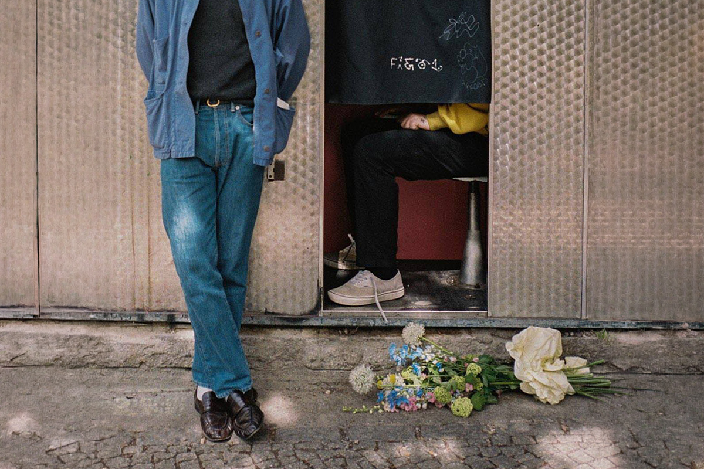

Review: Harry Styles – ‘Kiss All The Time. Disco, Occasionally’
Un paso seguro en la carrera de Styles
Un paso seguro en la carrera de Styles

Han pasado cuatro años desde que el último lanzamiento del ex One Direction, Harry Styles, llegó a nuestras vidas. Canciones de ese álbum, llamado ‘Harry’s House’, pegaron fuertísimo tanto en radios como en publicidad y redes sociales. ¿Les suena el single ‘As It Was’? Bueno, era precisamente de ese disco.
‘Harry’s House’ solo supo de alabanzas, y prueba de eso fueron sus múltiples galardones en festivales que celebran a la música, como los Grammys, donde se llevó el premio a Mejor Álbum Pop, Mejor Producción de Álbum, no Clásica y también el premio mayor, que es el de Álbum del Año. Así, también Styles se metió al bolsillo muchos otros reconocimientos.
Es por lo anterior que los fans y la crítica se encontraban expectantes por saber cuál sería el próximo paso musical del cantante. Cuál es la posibilidad de encontrarnos nuevamente con un álbum fresco y una producción 10/10.
En ese contexto es que aparece ‘Kiss All The Time. Disco, Occasionally’, el cuarto álbum de estudio solista de Harry Styles. Pero ¿de qué va esta nueva propuesta?
Este nuevo disco cuenta con 12 canciones y sigue bajo el alero de los sellos discográficos Erskine y Columbia Records. El recibimiento del público ha sido arrollador, llegando al número uno en diferentes países del globo y vendiendo más de 100 mil copias en su natal Inglaterra, transformando este trabajo en disco de oro a solo unas semanas de su lanzamiento oficial, el pasado 6 de marzo.
Dándole espacio a un experimento con tintes tradicionales, Aperture, primer single del álbum, se destaca por ser un himno pensado para ser un subidón de energía; bailable pero no desatado; con capas, pero no desordenado. Este track tuvo un excelente recibimiento en los BRIT Awards, donde se presentó en vivo al público por primera vez antes incluso del lanzamiento del disco.
Creo que esta canción puede ser uno de los highlights de este trabajo, porque es ambicioso en su pop mainstream, es elaborado, y tiene mucho de lo que agarrarse. Destaco que dura más de 5 minutos, característica que casi se ha perdido en el mundo medial donde se premia lo inmediato. Además, se atreve a adherir coros góspel, lo que sin duda le da una condición más atmosférica y grandilocuente a la propuesta. Es muy entendible por qué este track fue elegido como uno de los singles principales.
American Girls, otro de los singles y segunda canción del álbum, también cuenta con un bajo prominente y teclados que cubren espacios amplios y que a su vez se distinguen en un océano cargado de vibras retro. A pesar de ser una canción más bien sencilla en su composición, es interesante cómo se va armando capa a capa a medida que pasan los segundos. El coro es pegajoso, sin embargo, no llega a ser uno de los momentos más memorables del disco.
La diferencia a un discreto American Girls la hace la canción que le sigue, Ready, Steady, Go!, muchísimo más dinámica, distintiva, entretenida y groovy en su rítmica. Además, su estructura es considerablemente más interesante a pesar de su letra sencilla y su coro repetitivo. Es un track que te hace mover los pies sin que ni siquiera te des cuenta, y cómo eso no va a ser un plus en un álbum que literalmente tiene un “Disco, Occasionally” en su discurso.
Taste Back, la favorita de muchos, **es una versión contemporánea y más liviana de lo que muchos artistas indie pop ligados a lo electrónico comenzaron a armar en la primera década de los 2000. A pesar de que Taste Back no supone un mayor desafío musical, gracias a las cualidades de su estilo, ya tan bien conocido, hace este track bastante disfrutable. The Waiting Game, como antítesis, descansa en los cambios melódicos y el plus que una guitarra acústica suele complementar al clásico pop cimentado en bajos y sintetizadores. Veo este single como otros de los highlights del trabajo.

Si seguimos hablando de los de puntos altos en este disco, personalmente situaría a Coming Up Roses y Pop, la primera porque es la perfecta balada íntima y minimalista con instrumentos de cámara y la segunda porque es una canción pop (tal y como dice el título) con bastante personalidad. Con un bajo exquisito y preponderante, los sintetizadores punzantes y con efectos ochenteros, Pop debe ser de las canciones más pegajosas del disco, y de las que tiene más potencial en volverse viral (aunque difícil que al nivel alcanzado por Watermelon Sugar o As It Was). Lo interesante es que su potencial viral no sería simplemente porque se trata de Styles o porque sí o sí el cantante debe continuar con esta racha medial e inmediata, sino porque objetivamente estamos en presencia de una canción diferente y con actitud.
La primera de las últimas tres canciones del álbum sigue una lógica más “dance”, que es lo que se espera de un álbum titulado de la forma en que se titula.
Dance No More es otro de los tracks que tienen futuro en redes sociales. Es innegable la inspiración disco y con guiños a Bowie o Prince que se nos presenta como gran premisa. Lo que sí, le falta un poco de atrevimiento y de altura, lo que hace de esta canción una aproximación más tibia de lo que se esperaba considerando su musicalización y vocalización.
En Paint By Numbers estamos frente a una nueva balada, la tercera en lo que va del trabajo. Es una linda canción, breve y sin mayores sorpresas.
Finalmente, nos encontramos con Carla’s Song, donde volvemos a la estética musical dance de sintetizadores sobre un loop constante y bajos notorios. Es una canción que conversa directamente con el estilo que Styles ha estado desarrollando en su carrera solista, nada cambia mucho, pero sí contribuye a la personalidad musical del cantante. Si te gusta la estética musical del cantante, es más que seguro que disfrutarás de este track, el que destaco en su construcción, sobre todo desde la mitad hacia el minuto final.
En conclusión, lo de Harry Styles es disfrutable, pero no da un salto comprometido en estilo o musicalidad: juega a seguro de principio a fin y carece de desafíos a nivel de producción, que se queda en formulaciones muy reconocibles. Las letras, que tiendo a pasar por alto en general, tampoco son las mejores de su discografía. De todas maneras, hay algo que se debe destacar, y que es lo mismo que la crítica especializada ha estado alabando, y es que este trabajo es entretenido y de fácil escucha, aunque esas características suelen ser parte de un trabajo pop contemporáneo y de la talla de un artista como Styles.
Habrá que esperar cómo sigue en las listas, qué tal le va en la temporada de premios y qué tan exitosa será su gira “Together Together”, la que lo llevará por varios países del mundo desde mayo hasta finales de este año.
 Cultura
CulturaSé que suena raro hablar de calor extremo mientras en Chile todos están buscando la parka más gruesa del clóset.
 Cultura
CulturaEl hecho de que estemos entrando al mes de julio no se puede creer. Pero lo que tampoco se puede creer es la cantidad de artistas que han…
 Cultura
CulturaCuando hablamos de trabajos clásicos de la música chilena, siempre se nombran los discos de Violeta Parra, Víctor Jara, Los Jaivas o…